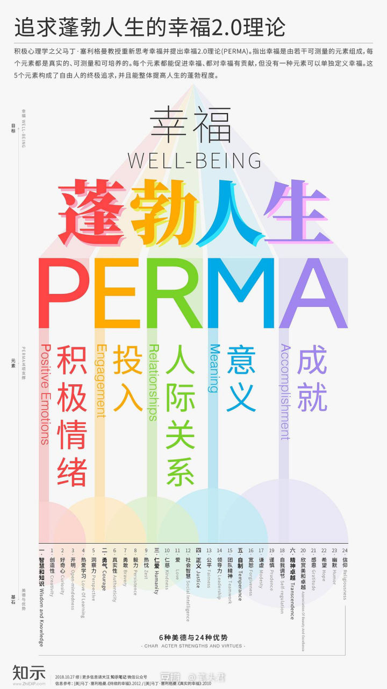

幸福2.0理论认为，一个人想要达到蓬勃人生，就必须有足够的“PERMA”。这5个字母分别代表幸福人生的5个元素。
幸福1.0理论基本上只有“良好的感觉”这一个维度，并认为我们人生做出的各种选择都是为了使自己的感觉尽量最好。而幸福2.0理论是多维的，且有5个支柱。某些元素可以用自我报告的方法来做主观的衡量，其他元素则可以用客观的衡量方法。 积极情绪是一种主观的变量，由你的想法和感受决定。投入、意义、关系和成就则兼有主观和客观的成分，因为你可以自认为你拥有这些，但其实也可能是错误的，甚至是自欺欺人的。所以幸福2.0理论不能仅包括良好的感觉，它还包括了你真实存在的意义、良好关系和成就。 在幸福1.0理论中，6种美德与24个优势是投入的基石。当你使用你最强的优势去应对最大的挑战时，你就能体验到心流。在幸福2.0理论中，6种美德与24个优势支撑着全部5个元素，它们运用你最强的优势，以获得更多的积极情绪、更多的意义、更多的成就以及更好的关系。 我们人生做出的各种选择，就是为了尽量得到这5个元素。你可以在生活中有更多积极情绪；你可以在工作中或与你爱的人在一起时更投入；你可以有更好的积极关系；你可以有更多的人生意义；你也可以取得更多的成就。这是一种自由选择的理论，它的5个元素构成了自由人的终极追求，并且能整体提高人生的蓬勃程度，而这就是幸福2.0理论。 增加“PERMA”不仅能帮助人们笑得更多，感到更满意，还能带来更高的生产力、更多的健康，以及一个更好的世界。
图片原出处请参阅这个知乎专栏
